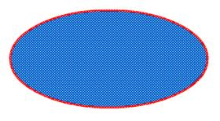
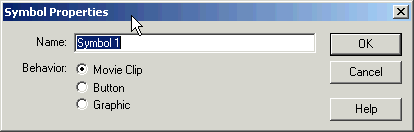

3. Konsep Shape dan Symbol pada Macromedia Flash
Shapemerupakan obyek asli yang dibuat pada stageyang belum diubah ke dalam simbol. Pada saat sebuah shape yang berada di stage dipilih, maka akan tampak seperti ada bintik-bintik putih pada obyek shape tersebut.

Symbol merupakan bagian yang penting dalam membuat animasi dengan flash. Untuk membuat suatu obyek bisa beranimasi, maka obyek tersebut diubah menjadi symbol.
Dengan merubah suatu obyekmenjadi symbol, itu artinya obyektersebut sudah menjadi bentuk yang pasti dan tidak bisa memanipulasinya lagi didalam stage misalnya merubah warna, memberikan coretan diatasnya atau yang lainnya. Jadi sebelum merubah suatu obyek menjadi symbol maka sebaiknya obyek tersebut harus benar- benar sudah siap untuk digunakan sehingga tidak lagi ingin melakukan perubahan terhadap obyek tersebut. Tetapi kita bisa melakukan operasi merubah bentuk di dalam stage seperti memutar, memperbesar atau memindahkannya.
Terdapat 3 jenis symbol yang digunakan di Flash, yaitu : movie clip, button, graphic. Sebelum sebuah obyek dirubah menjadi symbol, blok terlebih dahulu obyek tersebut dengan menggunakan selection tool yang ada pada toolbar bagian kiri atas.
Jika suatu obyek sudah diblok maka obyek tersebut akan muncul titik titik kecil pada permukaanya. Selanjutnya pilih menu insert>convert to symbol atau tekan F8 sehingga muncul menu seperti berikut:

Isikan nama sesuai dengan keinginan pada bagian name. Dan pada bagian behavior terdapat tiga pilihan yaitu:
movie clip : obyekdigunakan untuk beranimasi
button : obyek dibuat sebagai tombol
graphic : obyek dibuat sebagai gambar yang statis atau tidak beranimasi